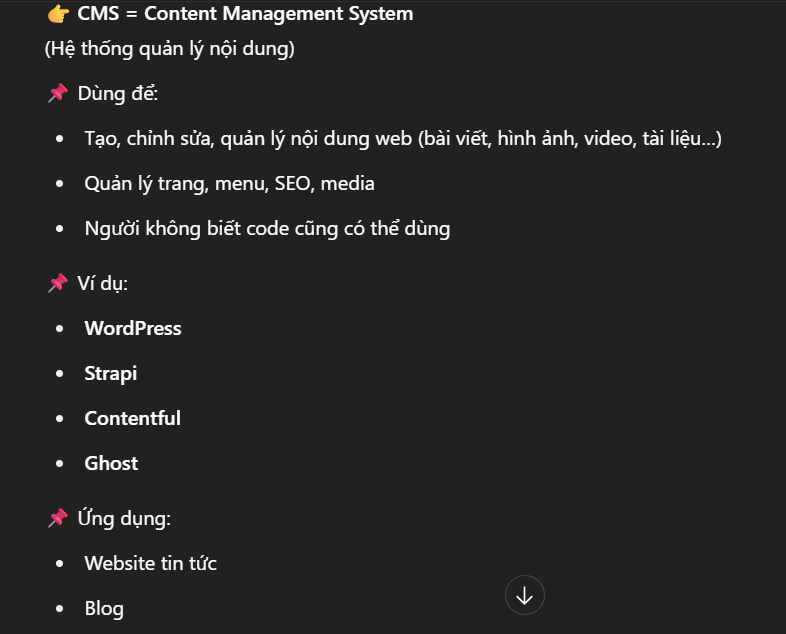
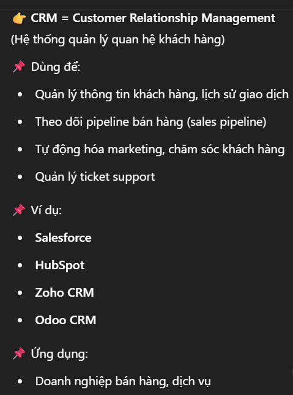

SaaS & Nền tảng thương mại điện tử
Thế nào là một SaaS, hai cách làm store trên Shopify, và phân biệt CMS với CRM — nhóm câu hỏi về mô hình sản phẩm.
SaaS là gì, thế nào thì được coi là một SaaS?
SaaS viết tắt của Software as a Service — phần mềm dưới dạng dịch vụ. Thay vì phải mua phần mềm, tự cài đặt, tự bảo trì, tự nâng cấp, lo server và bảo mật, người dùng chỉ cần đăng ký tài khoản, trả phí hàng tháng/năm và dùng trực tiếp trên trình duyệt.
Ví dụ quen thuộc
- Shopify — tạo website bán hàng.
- Google Docs — soạn thảo văn bản online.
Điều kiện để một phần mềm là SaaS
| Điều kiện | Cụ thể |
|---|---|
| Tự code phần mềm (web app) | VD: quản lý bán hàng, khách hàng, đơn hàng… |
| Deploy lên server / public cloud | Vercel, Render, VPS hoặc máy chủ riêng |
| Người dùng truy cập qua trình duyệt | Không cần cài đặt app, chỉ cần URL |
| Có tài khoản đăng nhập riêng từng người dùng | Họ dùng phần mềm như một dịch vụ |
| Thu phí theo tháng/năm (hoặc free) | Subscription là đặc điểm chính của SaaS |
Bình thường tự code một project rồi deploy cho mọi người dùng qua URL public thì đã được coi là một SaaS. Câu hỏi này hay đi kèm với multi-tenant — cách tách dữ liệu giữa các khách hàng dùng chung một hệ thống.
Làm store trên Shopify: dùng theme hay headless?
Shopify là nền tảng SaaS thương mại điện tử. Có hai cách triển khai giao diện, khác nhau ở chỗ ai chịu trách nhiệm phần front-end.
Bài giới thiệu tổng quan về Shopify ↗
1 — Shopify Theme (monolithic, giao diện truyền thống)
- Không cần code front-end hay back-end.
- Giao diện (UI) có sẵn, chỉnh sửa bằng Theme Editor:
shopify.com → Online Store → Customize. - Toàn bộ logic hiển thị dùng Liquid — ngôn ngữ template của Shopify.
- Trang sản phẩm, trang danh mục, giỏ hàng, thanh toán → đều đã có sẵn.
- Shopify tự tích hợp API nội bộ, không phải gọi API thủ công.
Đây là cách nhanh nhất để tạo một trang bán hàng mà không cần viết nhiều code.
2 — Headless front-end (React/Vue + Shopify API)
- Tự build giao diện bằng framework như React, Vue, Next.js.
- Không dùng theme của Shopify.
- Gọi Shopify Storefront API (GraphQL/REST) để lấy danh sách sản phẩm, xử lý giỏ hàng, checkout, đăng ký / đăng nhập.
| Thành phần | Bạn lo | Shopify lo |
|---|---|---|
| Giao diện | Bạn code (React/Vue) | Không dùng theme |
| Back-end logic, dữ liệu | Không cần làm | Shopify lo (qua API) |
| Hosting front-end | Tự deploy (Vercel, Netlify, GCP…) | — |
| Checkout, thanh toán, đơn hàng | Không cần làm | Shopify xử lý |
"Nếu yêu cầu chỉ là dựng store bán hàng nhanh thì em dùng theme của Shopify, sửa bằng Theme Editor và Liquid, gần như không phải code. Còn khi cần UI tuỳ biến cao, SEO tốt hoặc phải tích hợp với hệ thống ngoài như CMS hay hệ thống quản lý kho, em làm headless: tự build front-end bằng Next.js và gọi Storefront API, còn phần checkout và đơn hàng vẫn để Shopify lo để không phải tự chịu trách nhiệm về thanh toán."
Haravan là gì?
Haravan là nền tảng thương mại điện tử (E-commerce Platform) của Việt Nam, mô hình tương tự Shopify: cung cấp sẵn store, quản lý sản phẩm — đơn hàng — thanh toán, và mở API để tích hợp. Điểm khác biệt chính so với Shopify là hệ sinh thái nội địa: đối tác vận chuyển, cổng thanh toán và kênh bán hàng phù hợp thị trường Việt Nam.
CMS

CRM
